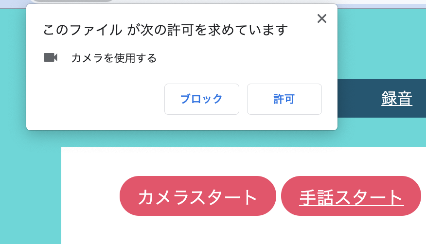
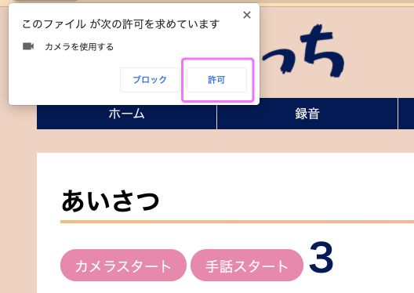
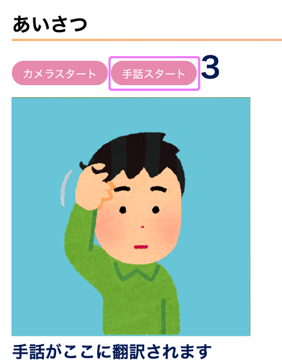
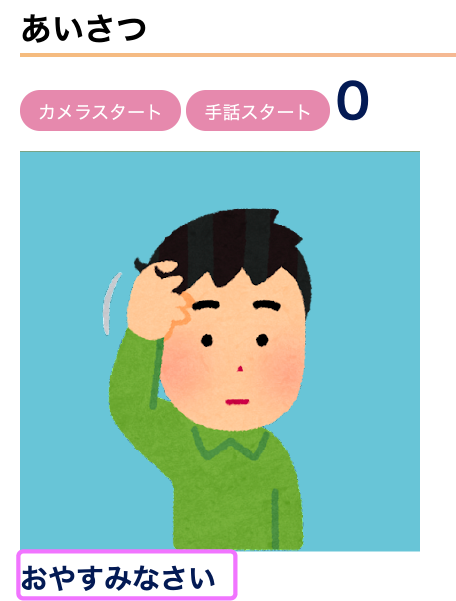
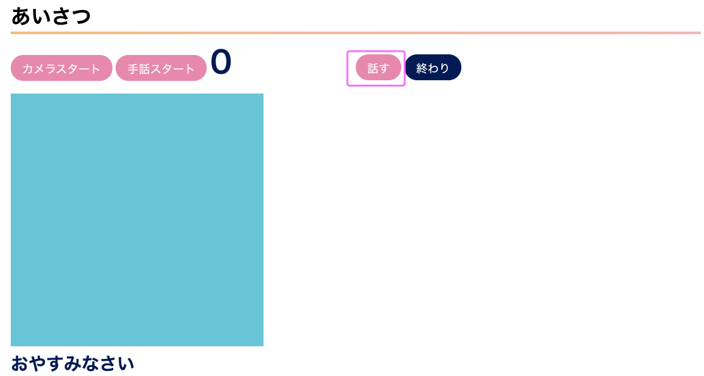
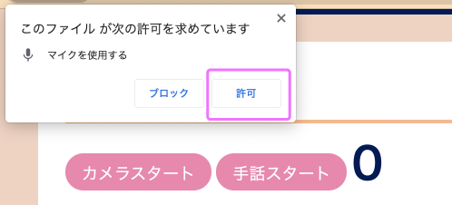

1.最初に
サイトの上のタブから、使う手話の種類を選びます。
今は「あいさつ」「あいさつ２」「返事」「気持ち」「学校」の５種類があります。
使える言葉はそれぞれのページにも書いてありますが、使い方の「手話リスト」を参考にしてください。
2.カメラを起動する
左上の「カメラスタート」のボタンを押します。

しばらく待つと、カメラを使っていいかメッセージが出ます。
「許可」を選んでください。少ししたらビデオカメラが起動します。
使える言葉はそれぞれのページにも書いてありますが、使い方の「手話リスト」を参考にしてください。

3.手話の認識をさせる
右上の「手話スタート」ボタンを押すと、ボタン右側の数字がカウントダウンを始めます。
ゼロになったら手話をしてください。それぞれの動きを２秒間隔ですると認識しやすいです。

認識した手話が音声合成されます。同時に耳が聴こえない人にも認識されたことが話あるように文字で表示されます。

4.話した声を文字に翻訳する
画面右半分の「話す」ボタンを押すと、音声認識が始まります・。

マイクの使用の許可が表示されるので、「許可」を選んでください。


 手話翻訳の使い方
手話翻訳の使い方